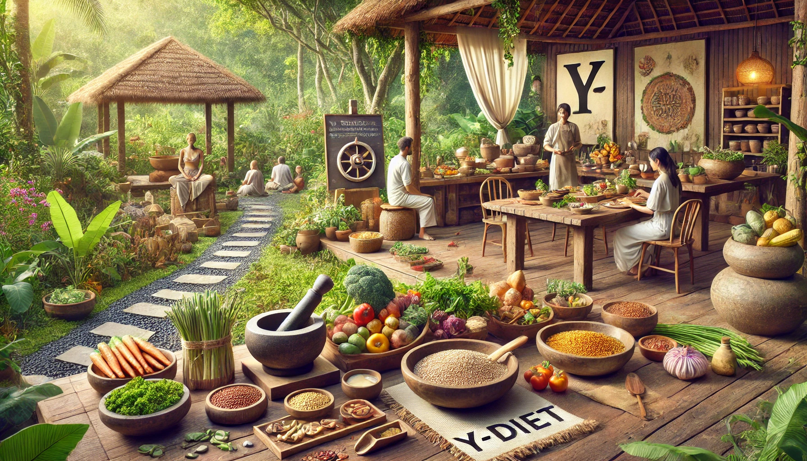

Food & Nutrition (Y-Diet)
Objective: Teach participants the fundamentals of sattvic nutrition, fasting, detox, and heritage cooking based on Ayurvedic and Yogic principles.
Course Structure
- Introduction to Y-Diet & Sattvic Nutrition
- Heritage Cooking Techniques & Recipes
- Fasting & Detox Methods
- Ayurvedic Functional Food Research & Applications
- Hands-on: Preparing Sattvic Meals
- Community Meal Sharing & Discussion
Practical Sessions
- Live cooking demonstrations
- Ayurvedic food preparation workshops
- Hands-on fasting detox protocols
